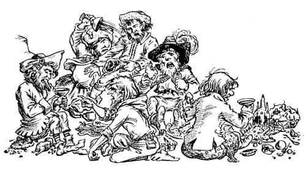

Cüceler Aldatılmayı Reddediyor
Tirian, yaklaşık iki metre genişliğinde, dört metre uzunluğunda ot damlı bir ahırın içinde olduklarını düşünüyordu - ya da düşünmeye zamanı olsaydı öyle düşünecekti. Oysa çimlerin üzerinde duruyorlardı, tepelerinde koyu mavi bir gökyüzü vardı ve ilk yaz günlerinden bir esinti hafifçe yüzlerini okşuyordu. Yakınlarında bir korulukta sık yapraklı ağaçlar vardı, her yaprağın altında, bizim dünyamızda kimsenin görmediği, altın sarısı, mor, kıpkırmızı renkte parıldayan meyveler görülüyordu. Tirian, meyveleri görünce sonbaharda oldukları hissine kapıldı, ama havada aylardan en geç haziran olduğunu hissettiren bir şey vardı. Hep birlikte ağaçlara doğru yürüdüler.
Her biri görünüşünü en çok beğendiği meyveyi koparmak için elini uzattı, sonra bir saniye için hepsi durakladı. Meyveler o kadar güzeldi ki, herkes, “Bu meyve çok güzel… eminim koparmama izin vermezler” diye düşünmüştü.
“Merak etmeyin” dedi Peter. “Ne düşündüğünüzü biliyorum. Ama yanıldığınıza eminim, kesinlikle eminim. Her şeye izin verilen ülkeye geldiğimizi hissediyorum.”
“Öyleyse?” dedi Eustace ve hepsi yemeye başladı.
Meyveler nasıldı? Maalesef kimse bu tadı tarif edemez. Tüm söyleyebileceğim, o meyvelerle karşılaştırıldığında yediğiniz en taze greyfurtun tatsız, en sulu portakalın kuru, en yumuşak armutun sert ve en tatlı yabançileğinin ekşi kalacağıdır. Ne içlerinde çekirdek vardı ne de etraflarında eşekarıları. O meyveyi bir kere yedikten sonra dünyadaki en tatlı şeyler bile ilaç gibi acı gelirdi size. O tadı size anlatamam. O ülkeye gidip tadına bakmadıkça neye benzediğini öğrenemezsiniz.
Yeteri kadar yediklerinde Eustace Kral Peter’e, “Buraya nasıl geldiğini anlatmadın daha. Kral Tirian geldiğinde söylemek üzereydin” dedi.
“Söyleyecek fazla bir şey yok” dedi Peter. “Treninizin geldiğini gördüğümüzde Edmund ve ben peronda duruyorduk. Dönemeci çok hızlı döndüğünü hatırlıyorum. Bizimkilerin de aynı trende olduğunu, ama Lucy’nin bunu bilmediğini düşünüyordum.”
“Sizinkiler mi, Yüce Kral?” dedi Tirian.
“Benim, yani Edmund, Lucy ve benim anne babamız.”
“Neden o trendeydiler?” diye sordu Jill. “Onların Narnia’dan haberdar olduğunu söylemeye çalışmıyorsun, değil mi?”
“Ah, hayır, bunun Narnia’yla ilgisi yok. Onlar Bristol’a gidiyordu. Gideceklerinden o sabah haberim olmuştu. Edmund, onların aynı trenle gitmek zorunda olduklarını söylemişti.” (Edmund demiryolları hakkında her şeyi bilirdi.)
“Sonra ne oldu?” dedi Jill.
“Şey, bunu anlatmak pek kolay değil, öyle değil mi Edmund?” dedi Yüce Kral.
“Pek değil” dedi Edmund. “Dünyamızdan büyüyle çekip alındığımız zamanlar gibi değildi. Korkunç bir gümbürtü oldu ve bir şey şiddetle bana çarptı, ama acıtmadı. Pek korkmamıştım - şey, heyecanlanmıştım ama. Ah - bu çok garip bir şey. Futbol oynarken yediğim bir tekme yüzünden dizim sızlıyordu. Sızının kaybolduğunu fark ettim. Sonra buradaydık işte.”
“Bizim için, vagonda her şey aşağı yukarı aynıydı” dedi Lord Digory, sakalına bulaşan meyveyi silerek. “Sanırım, Polly ve ben en çok vücudumuzdaki ağırlığın yok olduğunu hissettik. Siz gençler anlamazsınız. Yaşlılığımızı hissetmemeye başladık.”
“Gerçekten de, genç görünüyorlar!” dedi Jill. “Bizden daha yaşlı olduğunuzu sanmıyorum.”
“Şu an olmasa da daha önce öyleydik” dedi Leydi Polly.
“Buraya geldiğinizden beri neler oldu?” diye sordu Eustace.
“Pekâlâ” dedi Peter, “uzun bir süre (en azından ben uzun bir süre olduğunu sanıyorum) hiçbir şey olmadı. Sonra kapı açıldı—”
“Kapı mı?” dedi Tirian.
“Evet” dedi Peter. “Sizin girdiğiniz, ya da çıktığınız kapı. Unuttun mu?”
“Peki kapı nerede?”
“Bakın” dedi Peter ve işaret etti.
Tirian baktı, hayal edebileceğiniz en garip ve gülünç şeyi gördü. Sadece birkaç metre ötede, gün ışığında açıkça görülebilen kaba bir tahta kapı ve etrafında da kasası vardı; bunlar haricinde hiçbir şey yoktu, ne duvar ne de çatı. Tirian şaşkınlıkla kapıya doğru yürüdü, diğerleri de ne yapacağını merak ederek onu takip etti. Tirian kapının diğer tarafına yürüdü. Ama değişen bir şey yoktu; hâlâ bir yaz sabahında, açık havadaydı. Kapı, sanki bir ağaçmış gibi orada öylece dikiliyordu.
“Efendim” dedi Tirian, Yüce Kral’a, “bu büyük bir mucize.”
“Bu kapı beş dakika önce o Calormenli’yle birlikte girdiğin kapı” dedi Peter gülümseyerek.
“Ben ormandan ahıra girmemiş miydim? Bu kapıdan bir yere giriliyormuş gibi görünmüyor.”
“Etrafında yürüdüğünde öyle görünüyor” dedi Peter. “Bir de iki tahta arasındaki çatlaktan bak.”
Tirian delikten baktı. Önce karanlıktan başka bir şey görememişti. Gözü alışınca, sönmekte olan bir ateşin donuk kırmızı közlerini, simsiyah gökyüzünü ve yıldızları gördü. Ateşle kendi arasında, hareketli hareketsiz birçok karanlık şekil görebiliyor, konuşulanları duyabiliyordu; sesler Calormenliler’inkine çok benziyordu. Ahırdan dışarı, son savaşını yaptığı Lamba Çorakları’nın karanlıklarına bakmakta olduğunu anladı. Adamlar, içeriye girip Rishda Tarkaan’ı aramaları mı (hiçbirisi bunu yapmak istemiyordu) yoksa ahırı ateşe vermeleri mi gerektiğini tartışıyordu.
Tirian sonra tekrar etrafına baktı ve gözlerine inanamadı. Başının üzerinde mavi bir gökyüzü vardı, otluk alan alabildiğine uzanıyor, etrafındaki yeni dostları gülüşüyordu.
“Öyle anlaşılıyor ki” dedi Tirian kendi haline gülerek, “içeriden görülen ahırla dışarıdan görülen ahır farklı.”
“Evet” dedi Lord Digory. “İçi dışından daha büyük.”
“Evet” dedi Kraliçe Lucy. “Bizim dünyamızda da bir zamanlar bir ahırın içinde, tüm dünyamızdan daha büyük olan bir şey vardı.” Lucy ilk kez konuşmuştu ve Tirian, sesindeki heyecandan neden onun daha önce konuşmadığını anlayabiliyordu. Her şeyi diğerlerinden daha büyük bir heyecanla dinliyordu. Anlatılamayacak kadar mutluydu. Tirian onun tekrar konuşmasını istedi ve, “Lütfedin Madam, anlatın. Tüm maceranızı anlatın” dedi.
“Gümbürtüden ve şoktan sonra” dedi Lucy, “kendimizi burada bulduk. Tıpkı senin gibi meraklandık. Sonra kapı açıldı (açıldığında arkasındaki karanlığı gördük) ve iri bir adam kınsız kılıcıyla içeriye girdi. Silahlarından onun bir Calormenli olduğunu anlamıştık. Kılıcını kaldırıp omzuna koydu ve gelen herkesi kesmeye hazır durumda kapının yanında yerini aldı. Gidip onunla konuştuk, ama bizi gördüğünü ya da duyduğunu sanmıyoruz. Gökyüzüne, gün ışığına, çimlere bakmıyordu; sanırım bunların farkında değildi. Uzun süre bekledik. Sonra kapının diğer tarafındaki kolun çevrildiğini duyduk. Adam, içeriye girenin kim olduğunu anlayana kadar kılıcını çekmedi. Bu yüzden, ona bazılarını öldürmesinin, bazılarına da dokunmamasının söylendiğini düşündük. Kapı açıldı ve kapının bu yanında aniden Taş belirdi; hiçbirimiz nereden geldiğini görmedik. Kapıdan içeriye büyük bir kedi girdi. Taş’a şöyle bir baktı ve canını kurtarmak için koşmaya başladı; bunu tam zamanında yapmıştı çünkü Taş onun üzerine atıldı, ama kapı kapanırken gagasına çarptı. Adam Taş’ı görebiliyordu. Beti benzi attı ve Taş’ın önünde eğildi, ama Taş görünmez oldu.
Sonra uzun süre bekledik. Sonunda kapı üçüncü kez açıldı ve genç bir Calormenli içeriye girdi. Kapıdaki nöbetçi onu gördüğünde irkilmişti, çok şaşırmış görünüyordu. Sanırım başka birini bekliyordu—”
“Şimdi her şeyi anlıyorum” dedi Eustace (hikâyeyi yarıda kesmek gibi kötü bir alışkanlığı vardı). “İlk önce kedi girecekti ve nöbetçi ona dokunmamak için emir almıştı. Kedi sonra dışarıya çıkıp Taş’ı gördüğünü söyleyecek ve diğer hayvanları korkutmak için korkmuş gibi görünecekti. Külyutmaz, gerçek Taş’ın ortaya çıkacağını asla düşünmemişti; Kızıltüy dışarıya çıktığında gerçekten korkmuştu. Külyutmaz, ortadan kaldırmak istediği herkesi içeriye gönderecek ve nöbetçi onları öldürecekti. Ve…”
“Dostum” dedi Tirian yavaşça, “bayanın hikâyeyi anlatmasına engel oluyorsun.”
“Ne diyordum?” diye söze devam etti Lucy, “Nöbetçi şaşırmıştı. Bu, diğer adama savunmaya geçmesi için zaman verdi. Kavga ettiler. Adam nöbetçiyi öldürdü ve kapıdan dışarı attı. Sonra yavaşça bizim olduğumuz yere doğru yürüdü. Bizi görebiliyordu. Onunla konuşmaya çalıştık, ama adam büyülenmiş gibiydi. ‘Taş, Taş, Taş nerede? Taş’a gideceğim’ deyip duruyordu. Bu yüzden vazgeçtik ve o da şu tarafa doğru uzaklaştı. Ondan hoşlanmıştım. Sonra… of!” Lucy yüzünü buruşturdu.
“Sonra” dedi Edmund, “biri içeriye bir maymun fırlattı. Taş yine ortaya çıktı. Kız kardeşim öyle yufka yürekli ki, Taş’ın maymunu bir lokmada yuttuğunu söylemek istemiyor.”
“Oh olsun!” dedi Eustace. “Hiç fark etmez, umarım Taş’ın midesine oturur.”
“Daha sonra” dedi Edmund, “yaklaşık bir düzine cüce geldi, sonra Jill, Eustace ve en sonunda da sen geldin.”
“Umarım Taş cüceleri de yemiştir” dedi Eustace. “Küçük domuzlar.”
“Hayır, yemedi” dedi Lucy. “Saçmalama. Hâlâ buradalar. Onları buradan bile görebilirsin. Dost olmaya çalıştım ama nafile.”
“Onlarla dost olmak mı?” diye bağırdı Eustace. “Yaptıklarını bir bilseydin!”
“Aaa, kapa çeneni Eustace” dedi Lucy. “Gel ve gör. Kral Tirian, belki sen bir şeyler yapabilirsin.”
“Bugün cücelere sevgi gösterebileceğimi pek sanmıyorum” dedi Tirian. “Ama siz isterseniz sayın bayan, bundan fazlasını yapabilirim.”
Lucy önden yürüdü, çok geçmeden cücelerin hepsini görebildiler. Çok tuhaf bir görüntüleri vardı: Bağlarından kurtulmuş olmalarına rağmen etrafta dolaşıp eğlenmeye, ya da uzanıp dinlenmeye çalışmıyorlardı. Yüzlerini birbirlerine dönmüş, küçük bir çember oluşturacak şekilde oturmuşlardı. Lucy ve Tirian onlara dokunacak kadar yaklaşana dek ne etraflarına baktılar, ne de birilerinin geldiğini fark ettiler. Sonra cücelerin hepsi, sanki kimseyi göremiyormuş ama etrafı dinleyip seslerden neler olduğunu anlamaya çalışıyormuş gibi başlarını uzattılar.
“Önünüze bakın!” dedi içlerinden biri aksi bir sesle. “Nereye gittiğinize dikkat edin. Kafamızın üzerine basmayın.”
“Tamam!” dedi Eustace öfkeyle. “Kör değiliz. Görüyoruz herhalde.”
“Burada da görebiliyorsanız gözleriniz çok güçlü olmalı” dedi ismi Kırpık olan cüce. Az önce de o konuşmuştu.
“Nerede?” diye sordu Edmund.
“Yuh sana mankafa, tabii ki burada” dedi Kırpık. “Bu pis kokan kasvetli, zifiri karanlık küçük ahırda.”
“Kör mü oldunuz?” diye sordu Tirian.
“Siz bu karanlıkta burnunuzun ucunu görebiliyor musunuz?” dedi Kırpık.
“Ama karanlık değil ki, sizi zavallı, aptal cüceler” dedi Lucy. “Görmüyor musunuz? Yukarıya bakın! Etrafınıza bakın! Gökyüzünü, ağaçları, çiçekleri görmüyor musunuz? Beni görmüyor musunuz?”
“Olmayan bir şeyi nasıl görelim ki? Bu zifiri karanlıkta sen beni, benim seni gördüğümden daha fazla nasıl görürsün?”
“Ben seni görüyorum” dedi Lucy. “Bunu sana ispatlayacağım. Ağzında bir pipo var.”
“Tütün kokusunu duyan herkes söyleyebilir bunu” dedi Kırpık.
“Ah, zavallı yaratıklar! Bu çok kötü” dedi Lucy. Sonra aklına bir fikir geldi. Durup birkaç hercaimenekşe topladı. “Cüceler, dinleyin” dedi. “Gözleriniz bozuk ama burunlarınız iyidir belki. Kokuyu alabiliyor musunuz?” Taze ve ıslak çiçekleri Kırpık’ın çirkin burnuna uzattı. Ancak onun küçük ve sert yumruğundan kurtulmak için geriye sıçramak zorunda kaldı.
“Böyle soytarılıkları niye yapıyorsun?” diye bağırdı Cüce. “Buna nasıl cesaret edersin? Yüzüme bir sürü pis gübre yaklaştırarak ne yapmaya çalışıyorsun? İçinde deve dikeni de vardı. Terbiyesiz! Hem sen kim oluyorsun ki?”
“Hey cüce” dedi Tirian, “o geçmişten, Aslan tarafından buraya gönderilen Kraliçe Lucy’dir ve o istediği için ben, yasal kralınız Tirian, ihanetiniz ispatlandığı halde başınızı gövdenizden ayırmıyorum.”
“Eh, bu da üstüne tuz biber ekiyor!” diye bağırdı Kırpık. “Tüm bu saçmalıklardan bahsetmeye nasıl devam edersiniz? O harika Aslan’ınız gelip size yardım etmedi değil mi? Sanmıyorum. Yenilip, hepimiz gibi bu kara deliğe itildiğiniz şu anda bile hâlâ o eski oyunları oynuyorsunuz. Yeni yalanlar uyduruyorsunuz! Hiçbirimizin hapsedilmediğine, buranın karanlık olmadığına ve Tanrı bilir daha ne yalanlara inandırmaya çalışıyorsunuz bizi.”
“Aptal, karanlık sadece senin kafanın içinde” diye bağırdı Tirian. “Karanlığı kafandan çıkar.” İleriye uzanıp Kırpık’ı kemerinden ve külahından yakalayarak cüceler çemberinden çekip aldı, ama yere koyar koymaz, Kırpık burnunu ovuşturup uluyarak diğerlerinin yanına doğru fırladı.
“Of! Of! Bunu neden yaptın? Yüzümü duvara neden çarptın? Neredeyse burnumu kırıyordun.”
“Of!” dedi Lucy. “Ne yapmamız gerektiğini bir bilsem!”
“Onları kendi hallerine bırakalım” dedi Eustace; bunu söylediği anda bir sarsıntı oldu. Tatlı hava daha da tatlılaştı. Arkalarında bir parlaklık görüldü. Hepsi arkasını döndü. En son dönen Tirian’dı; korkmuştu. O güne kadar görmeyi yürekten arzuladığı büyük, gerçek, altın Aslan tam karşısında duruyordu; diğerleri onun pençeleri etrafında diz çökerek bir çember oluşturmuştu bile. Aslan başını eğmiş diliyle onlara dokunurken, onlar elleriyle yüzlerini Aslan’ın yelesine gömüyordu. Aslan gözlerini Tirian’a dikti. Tirian titreyerek yaklaştı ve kendini Aslan’ın ayaklarına attı. Aslan onu öperek, “En kötü anlarda bile dimdik ayakta duran Narnia krallarının sonuncusuna aferin” dedi.
“Aslan” dedi Lucy gözyaşları içinde, “bu zavallı cüceler için bir şeyler yapacak mısın, yapabilir misin?”
“Sevgili kızım” dedi Aslan, “yapabileceklerimi ve yapamayacaklarımı size göstereceğim.” Cücelere yaklaştı ve kükredi; hafif bir kükreyişti ama gökyüzünü sarsmıştı. Cüceler birbirlerine, “Duydun mu? Ahırın öbür ucundaki adamlar. Bizi korkutmaya çalışıyorlar. Bunu bir tür makineyle yapıyorlar. Hiç yüz vermeyin. Bizi tekrar aldatamazlar” diyordu.
Aslan başını kaldırıp yelesini salladı ve cücelerin önünde muhteşem bir ziyafet sofrası belirdi: Turtalar, güvercinler, tatlılar, dondurmalar… Her cücenin sağ elinde iyi şarapla dolu bir kadeh vardı. Ancak bu pek işe yaramadı. Açgözlülükle yiyip içmeye başladılar, ama tatların farkına varmadıkları çok açıktı. Ahırdaki şeyleri yediklerini sanıyorlardı. Biri saman, diğeri bayat şalgam yediğine inanıyor, bir diğeriyse çiğ lahana yaprağı bulduğunu söylüyordu. Koyu kırmızı şarapla dolu altın kadehleri dudaklarına götürüp, “Öf! Sanırım bir eşeğin yalağından alınan pis suyu içiyoruz! Bu kadar kötü durumlara düşeceğimizi asla düşünmezdik” dediler. Ancak çok geçmeden her biri, bir diğerinin kendisininkinden daha iyi bir şey bulduğundan kuşkulandığı için, birbirlerinin önlerindeki yiyecekleri kapışmaya başladılar. Tartışmaya başlayıp birkaç dakika içinde kavgaya tutuştuklarında, tüm güzel yiyecekler yüzlerine ve elbiselerine dökülüp ayaklar altında ezildi. Sonunda morarmış gözleriyle kanayan burunlarını iyileştirmek için yerlerine oturdular:

“Eh, en azından burada bir sahtekâr yok. Kimsenin bizi aldatmasına izin vermedik. Cüceler cüceler içindir” diyorlardı.
“Görüyorsunuz” dedi Aslan, “yardım etmemize izin vermeyecekler. İnanç yerine kurnazlığı seçiyorlar. Hapishaneyi kendi kafalarında yaratıyor ve hapishanenin içinde olduklarını düşünüyorlar. Aldatılmaktan öylesine korkuyorlar ki, oradan kurtulamıyorlar. Gelin çocuklar. Yapacak başka işlerim var.”
Kapıya doğru yürüdü, hepsi onu takip ediyordu. Başını kaldırıp kükredi, “Artık zamanı geldi!” Sonra daha da güçlü bir sesle, “Zamanı geldi!” dedi. Sonra öyle bir kükredi ki yıldızlar sarsıldı, “Zamanı geldi.” Kapı sonuna kadar açıldı.